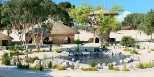

About Al Ain Zoo
Al Ain Zoo, established in 1968, is one of the UAE's premier zoological parks, located in Al Ain. Spanning over 900 hectares, it houses more than 4,000 animals across 180 species, with a focus on endangered native species like the Arabian Oryx and Arabian Leopard. The zoo is dedicated to wildlife conservation, education, and research, offering visitors a range of activities, from the Safari Park with animals roaming freely in expansive enclosures to interactive animal encounters. Visitors can enjoy educational programs, bird shows, and guided tours, while also exploring botanical gardens. The zoo provides family-friendly experiences, including a scenic train ride, and features restaurants and gift shops for a complete day out.
Popular Animals at Al Ain Zoo
- Arabian Oryx - A symbol of wildlife conservation in the UAE.
- Giraffes - Tall and graceful animals that visitors love to watch.
- Lions - Known as the "king of the jungle," these majestic animals can be seen at the zoo.
- Leopards - Beautiful big cats that live in the zoo's African section.
- Penguins - Cute, flightless birds that live in cold climates.
Things to Do at Al Ain Zoo
- 1. Explore Animal Exhibits – Discover a wide range of animals, including lions, giraffes, elephants, and Arabian oryx, in thoughtfully designed enclosures that replicate their natural habitats.
- 2. Safari Park – Experience the thrill of seeing animals like rhinos, zebras, and antelopes in a more open, safari-style setting. You can explore this area either by foot or take a guided safari tour for a more immersive experience.
- 3. Educational Programs – Participate in interactive programs, such as animal feedings, behind-the-scenes tours, and conservation workshops, where visitors learn about the zoo’s efforts in protecting endangered species.
- 4. Animal Encounters – Get close to friendly animals like giraffes or farm animals, offering a hands-on experience where you can feed or interact with them in a safe environment.
- 5. Bird Show – Watch trained birds perform stunning tricks and learn about the local bird species in an entertaining and educational show.
- 6. Zoo Museum – Explore the museum to learn about the zoo’s conservation initiatives, regional wildlife, and the history of the zoo’s animal care and breeding programs.
- 7. Botanical Gardens – Wander through lush gardens that feature both native and exotic plant species, perfect for a relaxing walk or photography.
- 8. Zoo Train Ride – Take a scenic, fun ride on the zoo’s train, which offers a quick and enjoyable way to see the park’s highlights, especially for families with children.
- 9. Dining and Shopping – Relax at one of the zoo’s cafes or restaurants, and shop for souvenirs at the gift shops, where you can find wildlife-themed items.